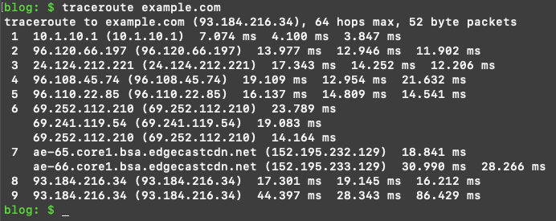
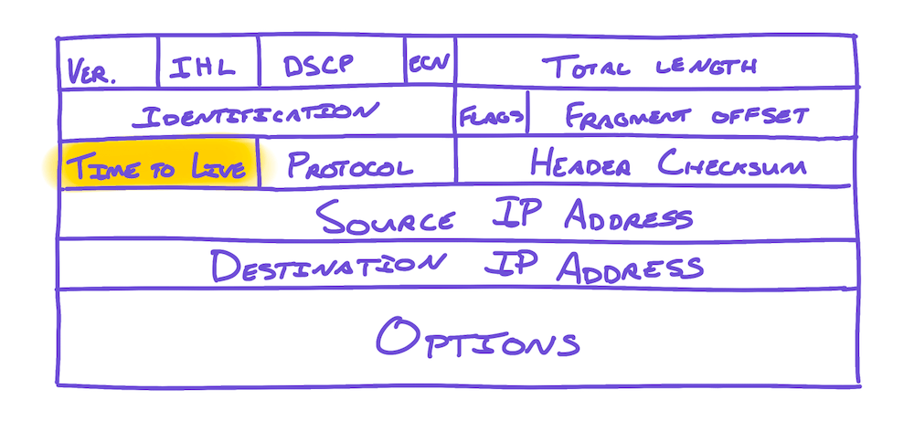
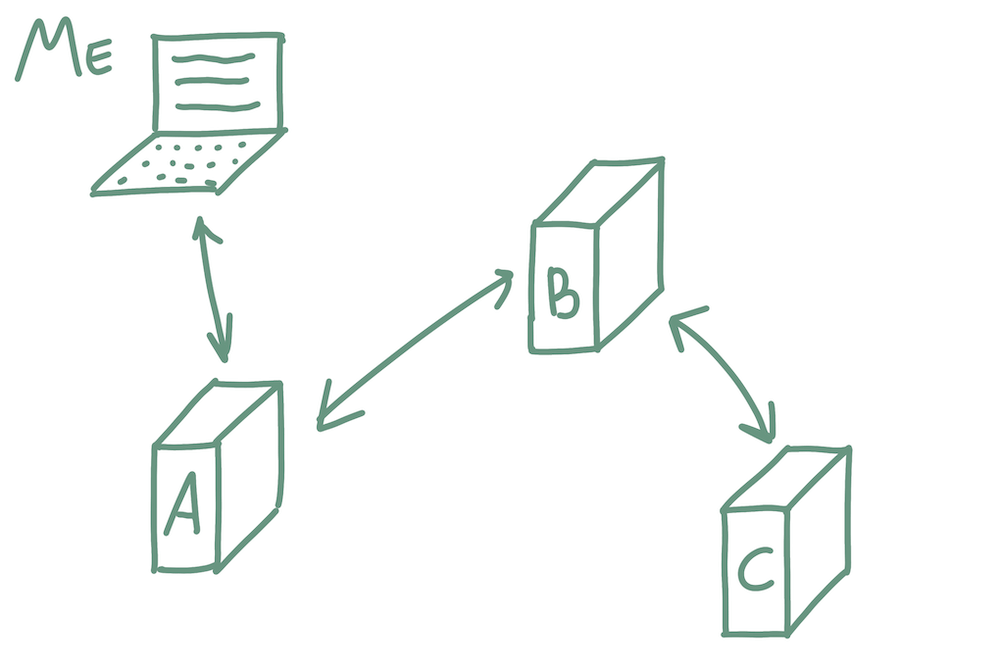
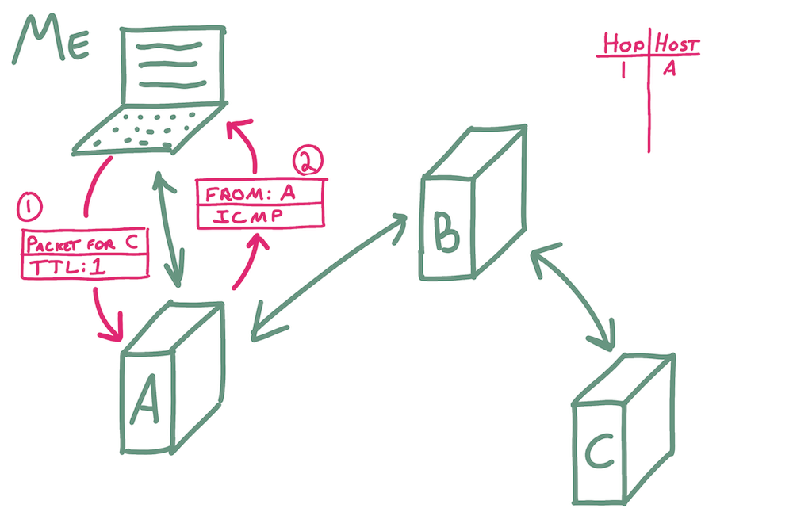
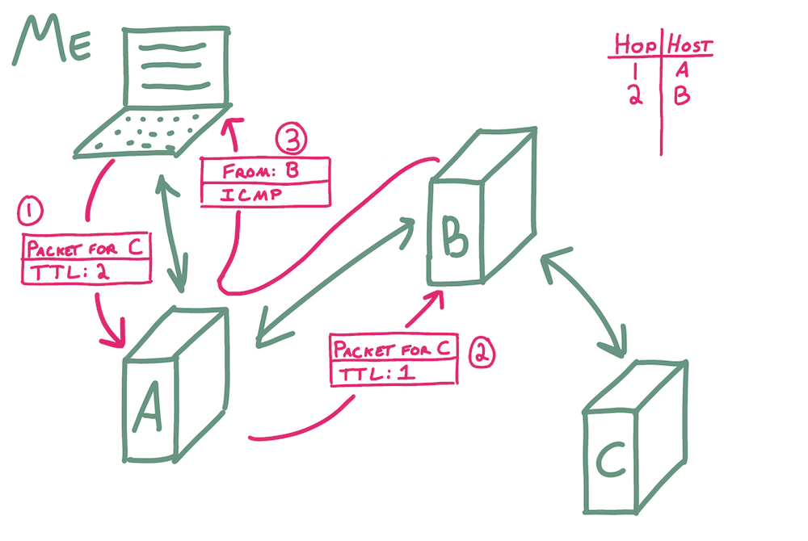
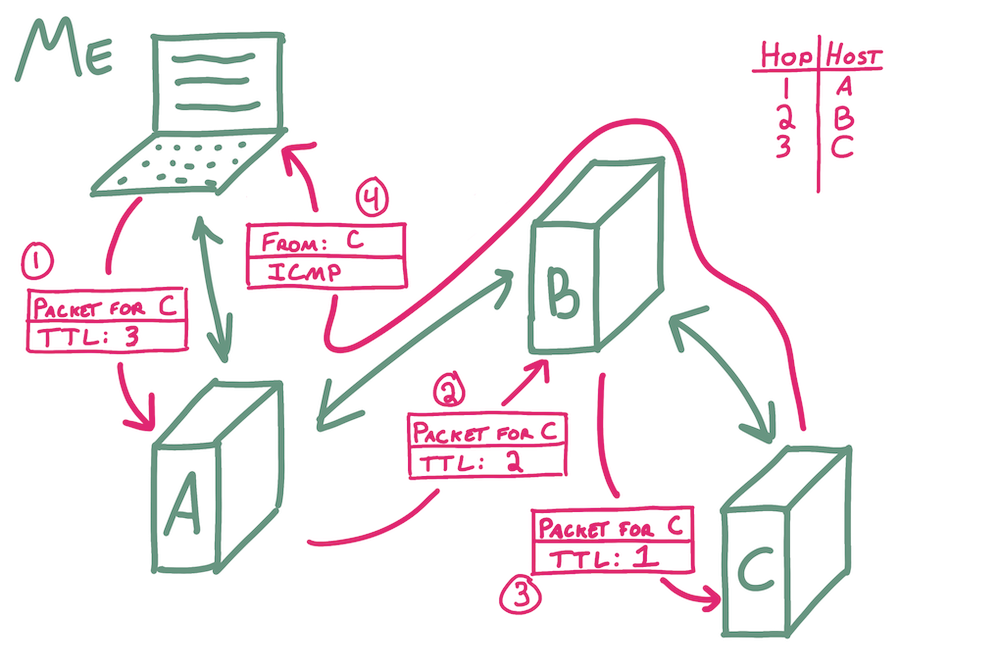

Writing a toy traceroute from scratch
Jan 30, 2022 · 1159 words · 6 minutes read
traceroute is a tool you can use to trace the route of packets from your computer to another computer. It lets you see each step that your packets take along the way.
For example, the following is the result of running traceroute from my computer in Massachusetts to “example.com”:

You can see that it took 8 hops to get from my computer to the destination IP (93.184.216.34), and you can see the associated timing for three different attempts for each step. If we wanted to, we could map out these IPs to see the rough physical path of our packets too; from a quick whois, it looks like example.com’s server is based in Los Angeles, and there are quite a few ways to get there!
traceroute is made possible by a side effect of features in the Internet Protocol (IP). Every IPv4 packet header includes a number of fields:

One of the fields in the header is a “Time To Live” value, or TTL. The original DARPA RFC defined Time to Live in 1981 as follows:
The Time to Live is an indication of an upper bound on the lifetime of an internet datagram. It is set by the sender of the datagram and reduced at the points along the route where it is processed. If the time to live reaches zero before the internet datagram reaches its destination, the internet datagram is destroyed. The time to live can be thought of as a self destruct time limit.
In theory, this would be measured in seconds, representing a true self-destruct timer, but in practice, the TTL actually reflects the number of hops that the packet can still take on its way to the destination. At each router along the packet’s path, this value is decremented, and if it hits zero, the packet goes no further and an ICMP error message is returned to the sender. This helps prevent unintended behavior in a complicated network, such as infinite looping. Without the TTL, you could imagine orphaned and lost packets being forwarded indefinitely.
The ICMP “Time exceeded” message that is sent back to the original sender includes some basic information, and with the message, the address of the router that sent it is also visible.
traceroute
traceroute leverages this decrementing TTL functionality in a clever way to explore the network. Let’s say we’re trying to trace the route to C in the following network:

traceroute relies on artificially manipulating the TTL of outgoing packets, incrementally sending packets with incrementing TTL values. It starts with a TTL of 1; when that packet gets to the first router, the TTL will be decremented to 0, and the router will send back an ICMP message.

traceroute can then send a packet to the destination with a TTL of 2, and this packet will make it to the second router along the path before an ICMP is sent back.

Each packet will go one hop further than the last, and by plumbing the router at each hop depth and keeping track of the routers it receives messages from along the way, it can reconstruct a rough path to the destination host.

What would a basic implementation look like?
In order to recreate this, we’ll want to write some code that does the following:
- Gets the destination IP of the example destination, say “example.com”
- Creates a socket that allows it to send UDP packets
- Creates a socket on which it’ll listen for ICMP messages
- Initializes loop variables for keeping track of the current hop
- Inside a loop while we haven’t reached the destination:
- Sends a packet with an incrementing TTL
- Receives an incoming ICMP packet
- Keeps track of the current hop and the address of the received ICMP message
That doesn’t sound too bad! This is all pretty approachable, and in Python, it may look something like this:
import socket
DESTINATION = 'example.com'
DESTINATION_PORT = 33434
MESSAGE = 'foo'
def main():
# Get the destination ip address.
destination_ip = socket.gethostbyname(DESTINATION)
print('Tracing the route to {0}'.format(destination_ip))
# Prepare a socket to send UDP packets.
sending_socket = socket.socket(socket.AF_INET, socket.SOCK_DGRAM)
sending_socket.setsockopt(socket.SOL_SOCKET, socket.SO_REUSEADDR, 1)
# Prepare a socket to listen for ICMP messages.
# Note: the middle argument _may_ be SOCK_RAW, but since I'm running this
# on a mac, I had to use SOCK_DGRAM to avoid needing root privileges.
# See https://apple.stackexchange.com/questions/312857/how-does-macos-allow-standard-users-to-ping.
receiving_socket = socket.socket(
socket.AF_INET, socket.SOCK_DGRAM, socket.IPPROTO_ICMP)
# Show the ICMP header, since that's where the router address is.
receiving_socket.setsockopt(socket.SOL_IP, socket.IP_HDRINCL, 1)
# Initialize the variables we'll use for seeing if we're done and keeping
# track of the current hop.
received_ip = None
current_hop = 1
while received_ip != destination_ip:
# Set the socket's TTL to the current hop so that the packet just
# reaches it before being stopped.
sending_socket.setsockopt(
socket.IPPROTO_IP, socket.IP_TTL, current_hop)
# Attempt to send a UDP packet to the destination ip.
sending_socket.sendto(bytes(MESSAGE, 'utf-8'),
(destination_ip, DESTINATION_PORT))
# Receive any incoming ICMP packet. We can ignore the first return
# value from recvfrom, which would be the included data.
_, addr = receiving_socket.recvfrom(1500)
received_ip = addr[0]
print('Current hop {0}: ICMP message received from {1}'.format(
current_hop, received_ip))
current_hop = current_hop + 1
if __name__ == '__main__':
main()
There we go! If I go ahead and run this, I get the following:
blog: $ python3 content/posts/toy-traceroute/toy_traceroute.py
Tracing the route to 93.184.216.34
Current hop 1: ICMP message received from 10.1.10.1
Current hop 2: ICMP message received from 96.120.66.197
Current hop 3: ICMP message received from 24.124.212.221
Current hop 4: ICMP message received from 96.108.45.74
Current hop 5: ICMP message received from 96.110.22.85
Current hop 6: ICMP message received from 69.241.119.54
Current hop 7: ICMP message received from 152.195.232.129
Current hop 8: ICMP message received from 93.184.216.34
blog: $
This matches exactly the path that traceroute uncovered earlier, which is very heartening! We’ve successfully plumbed the route in between my computer and the destination host.
Complications that make it interesting
There are many ways to improve this basic program, including at least the following:
- Timing: how long did each hop take?
- What if we sent multiple tries to have more timing samples?
- What do we do if a hop doesn’t respond?
traceroute handles these, but it’s always interesting to think about how you’d solve the problem yourself.
There are also a few interesting cases about tracing the route in general:
- What if a router drops UDP packets? What if it doesn’t send ICMP packets?
- What if two subsequent requests take a different path through the network? Would the path we’re tracing really exist?
Seeing how things work through a toy problem
traceroute is a simple but clever use case of a built-in feature of the internet, and it’s fun to see how it works through a basic example.
Misc. recommended reading:
tracerouteWikipedia articletracerouteis also turning 35 this year!
- traceroute source code
- Cloudfare’s blog: What is the Internet Protocol?
- LIFEGUARD: Practical Repair of Persistent Route Failures, another clever reuse of functionality with BGP to avoid route failures